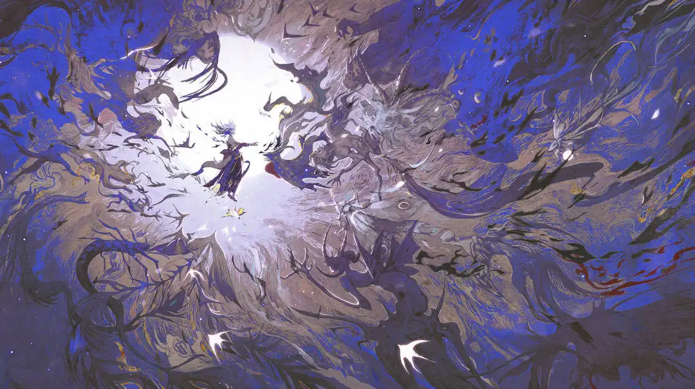
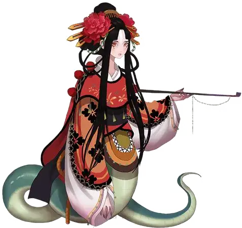
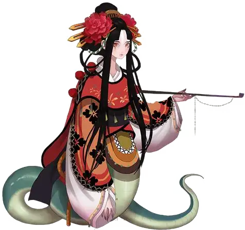

-
-
阴阳师
六周年庆
星守千年
以世间的花,蛇为灵感,以青色为主，更能够突出清姬的淡雅与幽静。蛇的受伤如同清姬心中的伤痕。
这世间的百花,总能让清姬回顾之前与他共度的美好时光。还有那如影随形的头骨，仿佛他从未离开过一般。如果有人想抢夺她手中的头骨，她会毫不留情的让他从这世上消失，挫骨扬灰。
缚骨清姬缚骨清姬缚骨清姬缚骨清姬缚骨清姬缚骨清姬缚骨清姬缚骨清姬缚骨清姬缚骨清姬缚骨清姬缚骨清姬 -
阴阳师
六周年庆
星守千年
测试文字 测试文字测试文字
测试文字测试文字 测试文字
测试文字 -
阴阳师
六周年庆
SSR须佐之男
高天原三贵子中的处刑之神、掌控天雷万象的武神之首。数千年前的七恶神之战中，须佐之男率高天原神军，与天照一同镇压了七恶神，并在高天原审判上以天羽羽斩封印八岐大蛇。神明本是高贵的灵魂，是旁观者，但须佐之男选择走下神坛，为世人承受苦难；有行刑者之名，却以行刑的方式，守护着他所爱的人们和世界。即使再过千年万年，即使世界变了模样，须佐之男也仍会为我们而战。
-
阴阳师
六周年庆
SP神启荒
「老师，请教教我，如何才能找到那颗属于自己的星？」陷入迷茫的少年向月海之主寻求答案，却没有得到确切的回复。 「世人寻觅是因他们对未知充满恐惧。而你不一样，荒，你是我最优秀的弟子。你应当比谁都清楚，天命不可违。」 —— 真的，是这样吗？
「天命不可违，荒，你要谨记。」月读的告诫在耳畔反复萦绕不散，如同试图刻入脑海的咒语，阻挡着他寻求内心答案的脚步。少年神使终于打破那道无形的桎梏，自心底发出长久以来的质疑——「天命，真的不可违吗？」